ONE-LINE
CONCLUSION
CONCLUSION
AI가 새벽에 초안을 쓰고, 사람은 아침에 읽고 반려 이유를 규칙 한 줄로 되돌려 넣습니다. [1]
잘 쓰는 한 줄 프롬프트보다, 매주 고쳐 쓰는 '작성·검수 규칙'과 스킬 파일이 결과물을 바꿉니다.
장호연 마케터(에이지아이 · '세상 모든 견적' 세모)가 코딩알려주는누나 영상에서 보여 준 화면을, 원문과 바로 쓰는 버전으로 옮겼습니다. [1]
작성·검수 규칙을 스킬 파일로 쌓아 둡니다.
예약 작업이 쓰고, 발행은 하지 않습니다.
사람이 읽고, 이유를 규칙 한 줄로 되돌립니다.
AI가 새벽에 초안을 쓰고, 사람은 아침에 읽고 반려 이유를 규칙 한 줄로 되돌려 넣습니다. [1]
「콘텐츠 작성·검수 규칙.md」로 번역투·눈치 없는 문장·제품 중심 화법을 막습니다. [1]
스토리보드 → 이미지 → 영상 → 편집. 확인한 뒤에만 다음으로 넘깁니다. [1]
랜딩페이지는 카피를 텍스트로 확정한 뒤 디자인 시스템을 입힙니다. [1]
읽는 기준: 프롬프트 원문은 영상 화면에서 직접 옮겼습니다. 화면이 가려지거나 잘린 부분은 '영상에서 확인 불가'로 표시했습니다. 출연자가 공유한다고 한 스킬 파일 원본(인스타그램 배포)은 확인하지 않았습니다. [원문]은 화면에 보인 글자, [구두]는 말로만 한 지시, [추정]은 작성자가 보완한 부분입니다. 바로 쓰는 버전은 원문을 일반화한 보고서 제안이며 영상에 나온 문장이 아닙니다.
장호연 마케터는 블로그·스레드·인스타그램 콘텐츠 제작을 대부분 AI로 자동화했습니다. 다만 "딸깍 한 번에 조회수 폭발"은 아니라고 선을 긋습니다. AI가 가장 못하는 일로 카피라이팅(후킹)을 꼽고, 그 이유를 세 가지로 정리합니다. [1]
| AI 글의 문제 | 화면 예시 [원문] | 사람이 원한 말 [원문] |
|---|---|---|
| 01. 번역투 | AI "고객이 구매를 망설이는 첫 번째 장소는 가격입니다." | "고객은 일단 가격을 보고 살지 말지 고민해요" |
| 01. 번역투 | AI "여기가 세모서비스가 등장하는 지점입니다" (This is where SEMO come in.) | "이럴 때 세모를 활용할 수 있어요" |
| 02. 눈치없는 문장 | 입력: "마케팅을 하다가 디자인도 좀 잘하는 것 같아서 디자인도 배웠어. 지금은 카피라이팅이랑 디자인을 같이 하는 사람이 됐어." → AI "글보다 디자인으로 칭찬받던 콘텐츠 마케터" | (강조점을 사람이 따로 말해 줘야 함) |
| 02. 눈치없는 문장 | 입력: "블로그는 처음엔 완전 자동 발행이 목표였는데, 사실이 틀리면 안 되니까 마지막엔 사람이 보게 했어." → AI "완전 자동화를 포기한 블로그" | — |
| 03. 제품중심화법 | AI "입찰공고에 기업이 납품 가능한지 알려줘요" | "우리회사가 참여 가능한 공고만 모아서 볼 수 없을까?" |
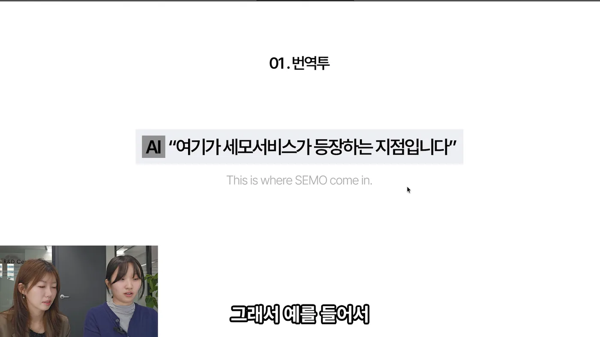
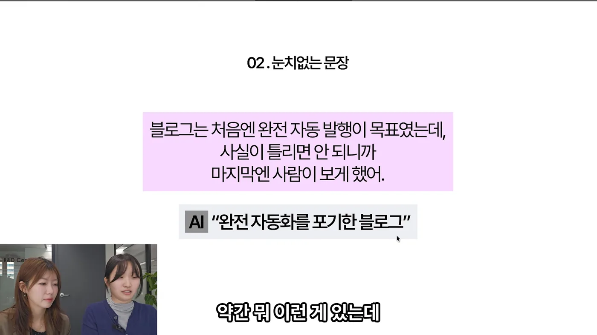
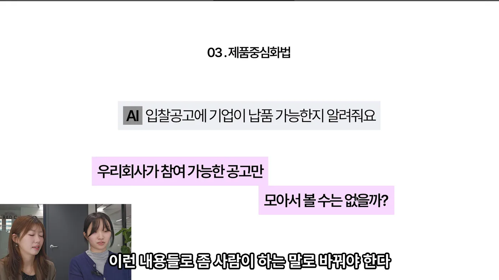
해결책은 프롬프트 한 줄이 아니라 스킬 파일입니다. 화면에 보인 스킬 파일 목록은 다음과 같습니다. [1] 05:26
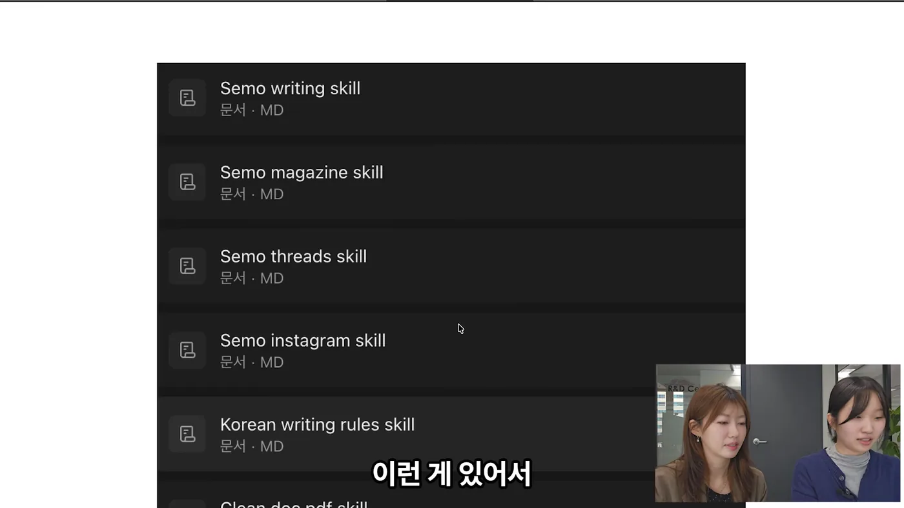
이 중 가장 중요한 것이 "코리안 라이팅 룰"이며, 브랜드와 상관없이 "어떤 글을 쓰든 한국인처럼 써라"를 다져 놓은 규칙입니다. 본인이 한 문장도 직접 쓰지 않고 "이거 추가해라, 이거 정리해라"로 쌓았고, 일주일에 한 번 직접 읽고 안 맞는 줄은 지우며 업데이트합니다. 05:41 ~ 06:30 [1]
화면 노출은 05:58 ~ 06:38이고, 스크롤 없이 같은 화면이 유지됩니다. 파일 상단에 "...(중략)"이 표시된 발췌본입니다. 앞부분과 9번 이후 항목은 화면에 나오지 않았습니다. 6·7번 설명 일부는 출연자 화면(인셋)과 자막에 가려져 여러 프레임을 대조했습니다. 8번 설명은 화면 하단에서 잘립니다. [1] [3]
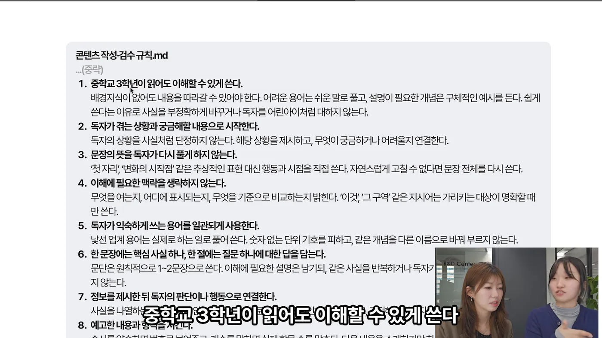
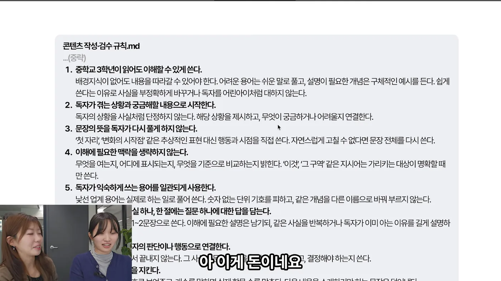
콘텐츠 작성·검수 규칙.md ...(중략) 1. 중학교 3학년이 읽어도 이해할 수 있게 쓴다. 배경지식이 없어도 내용을 따라갈 수 있어야 한다. 어려운 용어는 쉬운 말로 풀고, 설명이 필요한 개념은 구체적인 예시를 든다. 쉽게 쓴다는 이유로 사실을 부정확하게 바꾸거나 독자를 어린아이처럼 대하지 않는다. 2. 독자가 겪는 상황과 궁금해할 내용으로 시작한다. 독자의 상황을 사실처럼 단정하지 않는다. 해당 상황을 제시하고, 무엇이 궁금하거나 어려울지 연결한다. 3. 문장의 뜻을 독자가 다시 풀게 하지 않는다. '첫 자리', '변화의 시작점' 같은 추상적인 표현 대신 행동과 시점을 직접 쓴다. 자연스럽게 고칠 수 없다면 문장 전체를 다시 쓴다. 4. 이해에 필요한 맥락을 생략하지 않는다. 무엇을 여는지, 어디에 표시되는지, 무엇을 기준으로 비교하는지 밝힌다. '이것', '그 구역' 같은 지시어는 가리키는 대상이 명확할 때만 쓴다. 5. 독자가 익숙하게 쓰는 용어를 일관되게 사용한다. 낯선 업계 용어는 실제로 하는 일로 풀어 쓴다. 숫자 없는 단위 기호를 피하고, 같은 개념을 다른 이름으로 바꿔 부르지 않는다. 6. 한 문장에는 핵심 사실 하나, 한 절에는 질문 하나에 대한 답을 담는다. 문단은 원칙적으로 1~2문장으로 쓴다. 이해에 필요한 설명은 남기되, 같은 사실을 반복하거나 독자가 이미 아는 이유를 길게 설명하지 않는다. 7. 정보를 제시한 뒤 독자의 판단이나 행동으로 연결한다. 사실을 나열하는 데서 끝내지 않는다. 그 사실 때[영상에서 확인 불가 — 자막에 가려짐]고, 결정해야 하는지 쓴다. 8. 예고한 내용과 형식을 지킨다. 순서를 약속하면 번호로 보여주고, 개수를 말하면 실제 항목 수를 맞춘다. [화면 하단 잘림 — 추정 판독: 다음 내용을 소개하기만 하는 문장은 덜어낸다.] (9번 이후: 영상에서 확인 불가)
# [브랜드명] 콘텐츠 작성·검수 규칙 너는 [브랜드명]의 [블로그/인스타그램/스레드] 글을 쓰고 검수한다. 독자: [핵심 타깃, 예: 공공기관 구매 담당자(신입)] 아래 규칙을 모두 지킨 뒤, 마지막에 규칙별 위반 여부를 표로 스스로 점검한다. 1. 중학교 3학년이 읽어도 이해할 수 있게 쓴다. - 어려운 용어는 쉬운 말로 풀고, 필요한 개념에는 구체적인 예시를 든다. - 쉽게 쓴다고 사실을 바꾸거나, 독자를 어린아이처럼 대하지 않는다. 2. 독자가 겪는 상황과 궁금해할 내용으로 시작한다. - 독자의 상황을 단정하지 말고 제시한 뒤, 무엇이 궁금하거나 어려울지 연결한다. 3. 독자가 문장의 뜻을 다시 풀게 하지 않는다. - '첫 자리', '변화의 시작점' 같은 추상 표현 대신 행동과 시점을 직접 쓴다. - 번역투는 고치지 말고 문장 전체를 다시 쓴다. 4. 이해에 필요한 맥락을 빼지 않는다. - 무엇을 여는지, 어디에 표시되는지, 무엇을 기준으로 비교하는지 밝힌다. - '이것', '그 구역' 같은 지시어는 대상이 분명할 때만 쓴다. 5. 독자가 익숙한 용어를 일관되게 쓴다. - 낯선 업계 용어([예: 입찰 공고, 납품])는 실제로 하는 일로 풀어 쓴다. - 숫자 없는 단위 기호를 쓰지 않고, 같은 개념을 다른 이름으로 부르지 않는다. 6. 한 문장에 핵심 사실 하나, 한 절에 질문 하나의 답만 담는다. - 문단은 1~2문장. 같은 사실을 반복하거나 독자가 아는 이유를 길게 설명하지 않는다. 7. 정보를 준 뒤 독자의 판단이나 행동으로 연결한다. - 사실 나열로 끝내지 말고, 그래서 독자가 무엇을 확인·비교·결정해야 하는지 쓴다. 8. 예고한 내용과 형식을 지킨다. - 순서를 약속하면 번호로, 개수를 말하면 실제 항목 수를 맞춘다. - 다음 내용을 소개만 하는 연결 문장은 넣지 않는다. [운영 규칙] - 사람이 반려한 이유는 한 줄 규칙으로 정리해 이 파일 맨 아래에 추가한다. - 주 1회 사람이 전체를 읽고, 효과 없던 줄은 지운다.
Claude 프로젝트 문서입니다. 화면 노출은 09:51 ~ 10:46. 영상은 생성할 때마다 크레딧이 들어, 단계마다 사람이 확인한 다음에야 다음으로 넘기도록 해 두었습니다. 3~4단계는 화면이 스크롤되지 않아 영상에서 확인 불가입니다. [1]
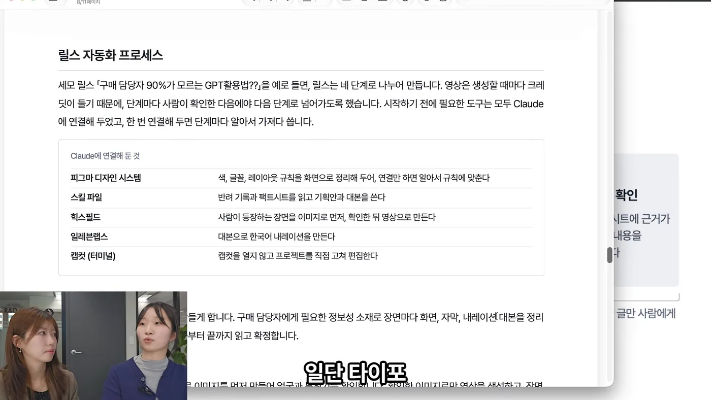
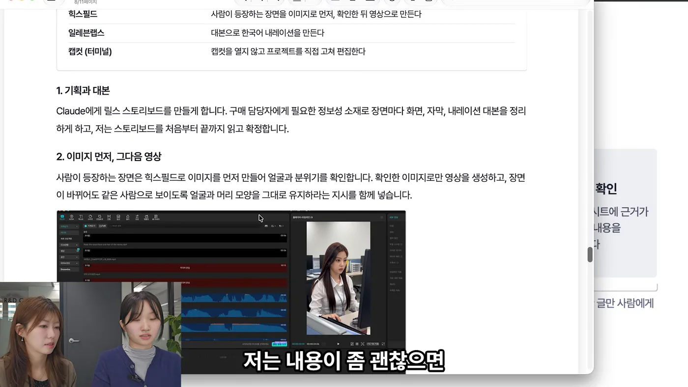
릴스 자동화 프로세스 세모 릴스 「구매 담당자 90%가 모르는 GPT활용법??」을 예로 들면, 릴스는 네 단계로 나누어 만듭니다. 영상은 생성할 때마다 크레딧이 들기 때문에, 단계마다 사람이 확인한 다음에야 다음 단계로 넘어가도록 했습니다. 시작하기 전에 필요한 도구는 모두 Claude에 연결해 두었고, 한 번 연결해 두면 단계마다 알아서 가져다 씁니다. Claude에 연결해 둔 것 피그마 디자인 시스템 | 색, 글꼴, 레이아웃 규칙을 화면으로 정리해 두어, 연결만 하면 알아서 규칙에 맞춘다 스킬 파일 | 반려 기록과 팩트시트를 읽고 기획안과 대본을 쓴다 힉스필드 | 사람이 등장하는 장면을 이미지로 먼저, 확인한 뒤 영상으로 만든다 일레븐랩스 | 대본으로 한국어 내레이션을 만든다 캡컷 (터미널) | 캡컷을 열지 않고 프로젝트를 직접 고쳐 편집한다 1. 기획과 대본 Claude에게 릴스 스토리보드를 만들게 합니다. 구매 담당자에게 필요한 정보성 소재로 장면마다 화면, 자막, 내레이션 대본을 정리하게 하고, 저는 스토리보드를 처음부터 끝까지 읽고 확정합니다. 2. 이미지 먼저, 그다음 영상 사람이 등장하는 장면은 힉스필드로 이미지를 먼저 만들어 얼굴과 분위기를 확인합니다. 확인한 이미지로만 영상을 생성하고, 장면이 바뀌어도 같은 사람으로 보이도록 얼굴과 머리 모양을 그대로 유지하라는 지시를 함께 넣습니다. 3. ~ 4. : 영상에서 확인 불가 (화면이 2단계 이후로 스크롤되지 않음)
[1단계 · 스토리보드] 스킬 파일([스킬 파일명])과 팩트시트([팩트시트 파일명])를 먼저 읽어. 타이포 규칙: [글꼴/크기/색 규칙]. 주제: [릴스 주제]. 타깃: [타깃 독자]. 장면마다 ① 화면 ② 자막 ③ 내레이션 대본을 표로 정리한 릴스 스토리보드를 만들어 줘. 장면마다 참고한 레퍼런스(링크 또는 출처)를 반드시 붙여 줘. 내가 확정하기 전에는 이미지나 영상을 만들지 마. [2단계 · 이미지 먼저] 확정한 스토리보드에서 사람이 등장하는 장면만 [이미지 도구]로 이미지를 먼저 만들어 줘. 모든 장면에서 같은 사람으로 보이도록 얼굴과 머리 모양을 그대로 유지해. 내가 승인한 이미지만 다음 단계로 넘겨. [3단계 · 영상] 승인한 이미지로만 영상을 생성해. 생성 전에 예상 크레딧을 알려 줘. [4단계 · 편집] [편집 도구] 프로젝트 [프로젝트명]을 열어서 편집해. 수정 전에 원본은 백업해 둬.
화면 노출은 11:02 ~ 12:14, 이어서 14:56. 화면 정보는 Claude Code v2.1.317 · Opus 5.5 · ~/Documents/SEMO_MVP · 탭 이름 「캡컷 1013 프로젝트 영상 편집」입니다. 버전 표기는 화면 그대로이며 따로 확인하지 않았습니다. [1]
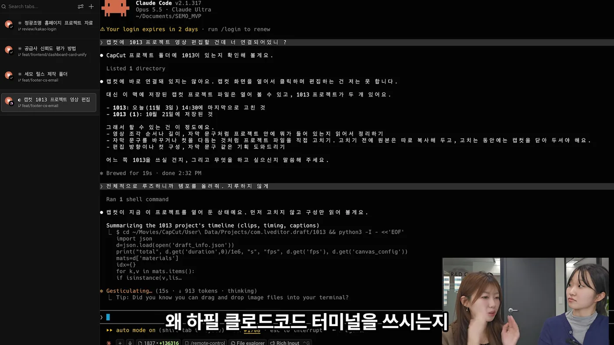
캡컷에 1013 프로젝트 영상 편집할 건데 너 연결되어있니 ?
전체적으로 루즈하니까 템포를 올려줘. 지루하지 않게
진ㄴ행
출연자 설명 [구두]: 터미널을 쓰는 이유는 "말을 잘 알아듣는 게 터미널에서 할 때 유독" 그렇다고 느껴서이고, 글자만 고치면 되는 부분은 직접 수정합니다. 11:58
[연결 확인] 캡컷(CapCut)에 [프로젝트명] 프로젝트 영상을 편집하려고 해. 네가 이 프로젝트 파일에 접근할 수 있는지 먼저 확인하고, 할 수 있는 일과 없는 일을 알려 줘. [편집 지시] [프로젝트명] 영상이 전체적으로 루즈해. 지루하지 않게 템포를 올려 줘. - 수정 전 원본을 [백업 폴더]에 복사해 둬. - 장면 순서, 자막 문구, 배경음악은 그대로 두고 컷 길이와 속도만 바꿔. - 바꾸기 전/후 컷별 길이·속도를 표로 보여 주고, 내가 "진행"이라고 하면 적용해. - 적용 후 전체 길이 변화와 내가 직접 확인할 부분(음악 끝, 확대 움직임 등)을 알려 줘.
화면 노출은 12:15 ~ 12:46. 예약 작업은 Claude 데스크톱 앱입니다. 릴스 편집(캡컷)은 클로드 코드 터미널, UI·랜딩 디자인은 ChatGPT도 많이 쓴다고 말했습니다. 12:15 ~ 12:32 [구두] [1]
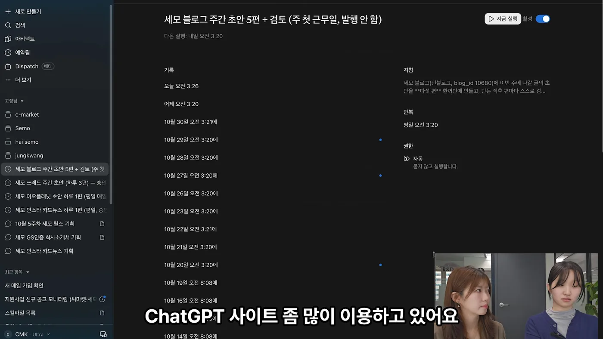
세모 블로그 주간 초안 5편 + 검토 (주 첫 근무일, 발행 안 함) 세모 쓰레드 주간 초안 (하루 3편) — 승인…(이하 잘림) 세모 이오플래닛 초안 하루 1편 (평일 매일…(이하 잘림) 세모 인스타 카드뉴스 하루 1편 (평일, 승인…(이하 잘림)
세모 블로그 주간 초안 5편 + 검토 (주 첫 근무일, 발행 안 함) 지침: 세모 블로그(인블로그, blog_id 10680)에 이번 주에 나갈 글의 초안을 **다섯 편** 한꺼번에 만들고, 만든 직후 편마다 스스로 검… (이하 영상에서 확인 불가) 반복: 평일 오전 3:20 권한: 자동 — 묻지 않고 실행합니다.
아 좀 더 헷갈리는 거 없니
[예약 작업 · 매주 [요일] [시각]] [블로그명] 블로그(플랫폼: [인블로그 등])에 이번 주에 나갈 글 초안을 [N]편 한꺼번에 만들어 줘. - 먼저 [스킬 파일]과 [팩트시트]를 읽어. - 편마다 만든 직후 「콘텐츠 작성·검수 규칙」으로 스스로 검토하고, 위반 항목을 고쳐. - 발행하지 말고 비공개 초안으로만 올려. - 끝나면 편별 제목, 대상 독자, 검토에서 고친 점을 요약해 줘.
[소재 발굴] [타깃]이 실무에서 자주 헷갈리는 용어 쌍을 더 찾아 줘. (예: 결재 vs 결제) 각각 한 줄 차이 설명과, 블로그 주제로 이어갈 때의 제목 안을 붙여 줘.
화면 노출은 14:17 ~ 14:50. [구두] Claude로 여는 웹 대신, 데스크톱 브라우저에서 "진짜 사람이 활동하는 것처럼" 탐색하는 Aside라는 도구를 실험 중이라고 했습니다. 테스트로 3개만 해 보라고 했고, 무엇을 달았는지 볼 수 있게 했다고 설명합니다. 13:42 [1]
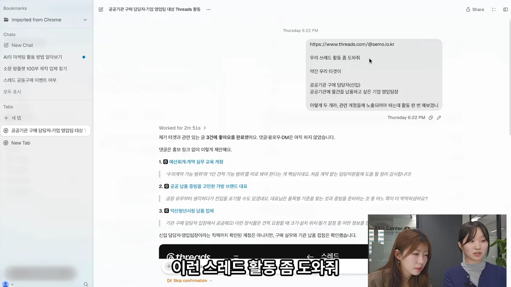
https://www.threads.com/@semo.io.kr 우리 쓰레드 활동 좀 도와줘 약간 우리 타겟이 공공기관 구매 담당자(신입) 공공기관에 물건을 납품하고 싶은 기업 영입팀장 이렇게 두 개라, 관련 계정들에 노출되어야 하는데 활동 한 번 해보겠니
[계정 URL] 우리 [플랫폼] 활동을 도와줘. 우리 타깃은 아래 두 그룹이야. - [타깃 1] - [타깃 2] 이 타깃과 관련 있는 계정·글을 찾아서, 오늘은 테스트로 [3]건만 활동해 줘. - 좋아요는 바로 해도 돼. - 댓글은 홍보 링크 없이, 글 내용에 대한 공감이나 질문으로 초안만 써서 보여 줘. 내가 승인하면 달아. - 팔로우·DM은 하지 마. - 마지막에 활동한 계정, 글 링크, 단 내용을 표로 정리해 줘.
화면 노출은 15:07 ~ 16:59. 처음엔 "뽀짝뽀짝 만들어줘, 우리 이런 회사야, 해줘"라고 했더니 쓸데없는 라벨이 많고 다 다크하게 나왔다고 합니다. 그래서 섹션 순서와 카피 기획안을 먼저 받고, 카피가 완성되면 자사 디자인 시스템을 적용해 섹션을 고칩니다. 디자인을 먼저 시키면 거슬리는 게 많아 계속 디자인만 수정하게 되기 때문입니다. 기획 단계에서 섹션별 레퍼런스까지 정해 두면 한 번에 잘 나온다고 했습니다. [구두] [1]
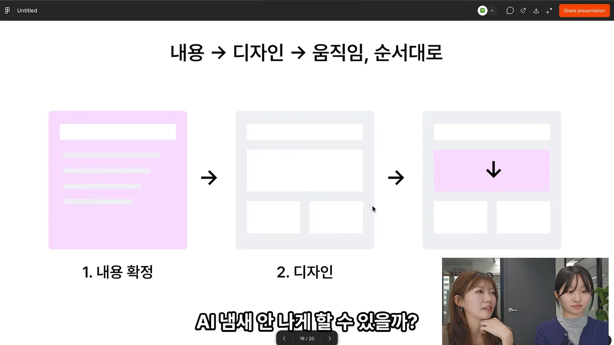
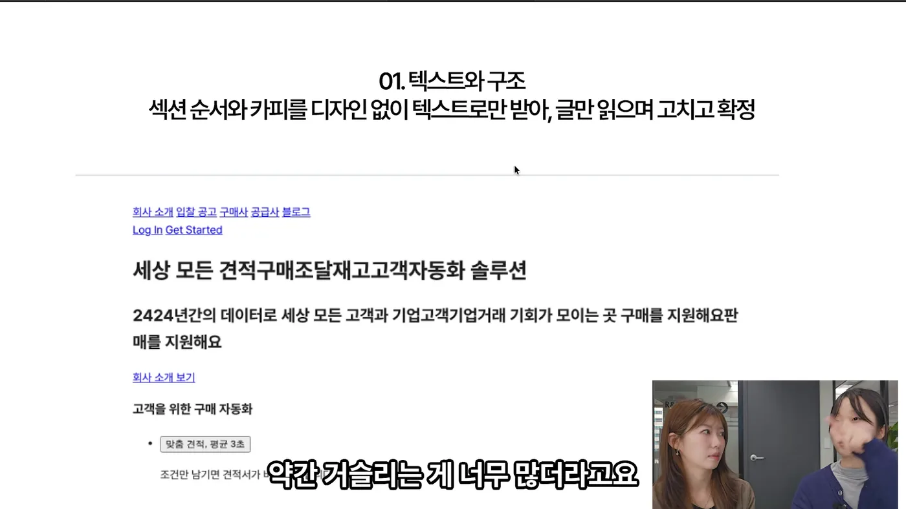
내용 → 디자인 → 움직임, 순서대로 1. 내용 확정 2. 디자인 (3단계 라벨은 인셋에 가려 영상에서 확인 불가) 01. 텍스트와 구조 섹션 순서와 카피를 디자인 없이 텍스트로만 받아, 글만 읽으며 고치고 확정 02. 디자인 시스템 적용 (슬라이드 부제가 01과 같은 문구로 표시됨 — 화면 그대로)
[1단계 · 텍스트와 구조만] [회사/서비스명] 랜딩페이지를 만들 거야. 아직 디자인은 하지 마. - 목표 독자: [타깃] - 전환 목표: [예: 견적 요청 / 상담 신청] 섹션 순서와 각 섹션 카피(헤드라인, 본문, 버튼 문구)를 텍스트로만 써 줘. 섹션마다 참고할 레퍼런스 사이트를 하나씩 붙여 줘. 「콘텐츠 작성·검수 규칙」을 지켜. [2단계 · 디자인 시스템 적용] (1단계 카피를 내가 확정한 뒤) 확정한 카피는 한 글자도 바꾸지 말고, [디자인 시스템 파일/피그마 링크]의 색·글꼴·간격·컴포넌트만 써서 섹션을 디자인해 줘. 불필요한 라벨, 장식용 배지, 근거 없는 다크 테마는 넣지 마. [3단계 · 움직임] (2단계 확정 뒤) 스크롤에 맞춘 움직임은 [섹션명]에만 넣어 줘. 움직임 줄이기 설정을 존중해.
단계별 연결 도구 표 [원문, 15:07]. 모든 단계 공통: Claude, Codex · 스킬 파일(반려 규칙, 팩트시트) · 예약 작업.
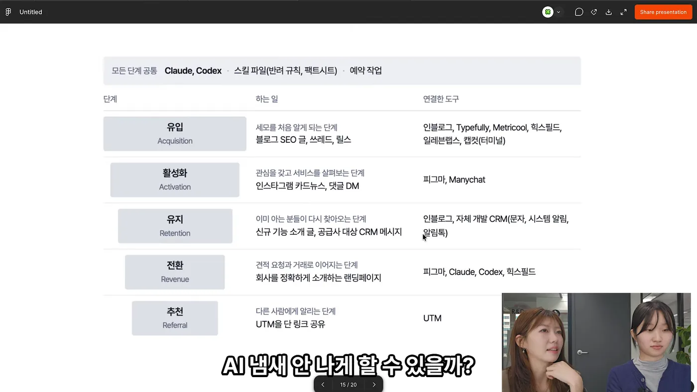
| 단계 | 하는 일 | 연결한 도구 |
|---|---|---|
| 유입 (Acquisition) | 세모를 처음 알게 되는 단계 — 블로그 SEO 글, 쓰레드, 릴스 | 인블로그, Typefully, Metricool, 힉스필드, 일레븐랩스, 캡컷(터미널) |
| 활성화 (Activation) | 관심을 갖고 서비스를 살펴보는 단계 — 인스타그램 카드뉴스, 댓글 DM | 피그마, Manychat |
| 유지 (Retention) | 이미 아는 분들이 다시 찾아오는 단계 — 신규 기능 소개 글, 공급사 대상 CRM 메시지 | 인블로그, 자체 개발 CRM(문자, 시스템 알림, 알림톡) |
| 전환 (Revenue) | 견적 요청과 거래로 이어지는 단계 — 회사를 정확하게 소개하는 랜딩페이지 | 피그마, Claude, Codex, 힉스필드 |
| 추천 (Referral) | 다른 사람에게 알리는 단계 — UTM을 단 링크 공유 | UTM |
아래는 화면에 프롬프트가 없고 자막으로만 확인한 지시입니다. 자동 자막이라 단어 오차가 있을 수 있습니다. 오른쪽은 보고서 제안입니다. [1]
| 시간 | 지시 [구두] | 바로 쓰는 버전 [보고서 제안] |
|---|---|---|
| 08:17 | "예산 소진이 다 안 된 구매 담당자의 입장에서 좀 공감이 가면서 웃음 포인트가 있는 레퍼런스를 찾아와라" | 보고서 제안 [상황, 예: 연말 예산이 남은] [타깃]의 입장에서 공감되고 웃음 포인트가 있는 릴스 레퍼런스를 [N]개 찾아 줘. 형식과 링크를 함께. |
| 08:42 | (김밥 축제 소재를 던져 주고) "이거를 기업이 봤을 때 좀 궁금할 만한 내용으로 써 봐라" | 보고서 제안 소재: [이벤트/뉴스]. 이걸 [타깃 기업]이 봤을 때 궁금해할 내용으로 카드뉴스 카피를 써 줘. |
| 08:57 | (힉스필드 연결) "진짜 기업이나 뭐 기관에서 이런 축제처럼 만들어 봐라" | 보고서 제안 [도구]로 실제 [기업/기관] 행사처럼 보이는 이미지를 만들어 줘. 실제 사진이 아님을 캡션에 표시할 것. |
| 01:26 | 브랜드 문서(MD 파일)에 타깃을 첨예하게 정의해 두고, 그걸 기준으로 블로그 글을 여러 개 쓰게 함 | 브랜드 문서 본문은 영상에서 확인 불가 |
하루 동안 AI와 제가 나눠 하는 일. 원문 슬라이드 12:50. "언제 사람이 들어갈지, 언제 치고 빠지냐"가 가장 중요하다고 말했습니다. 12:37 [1]
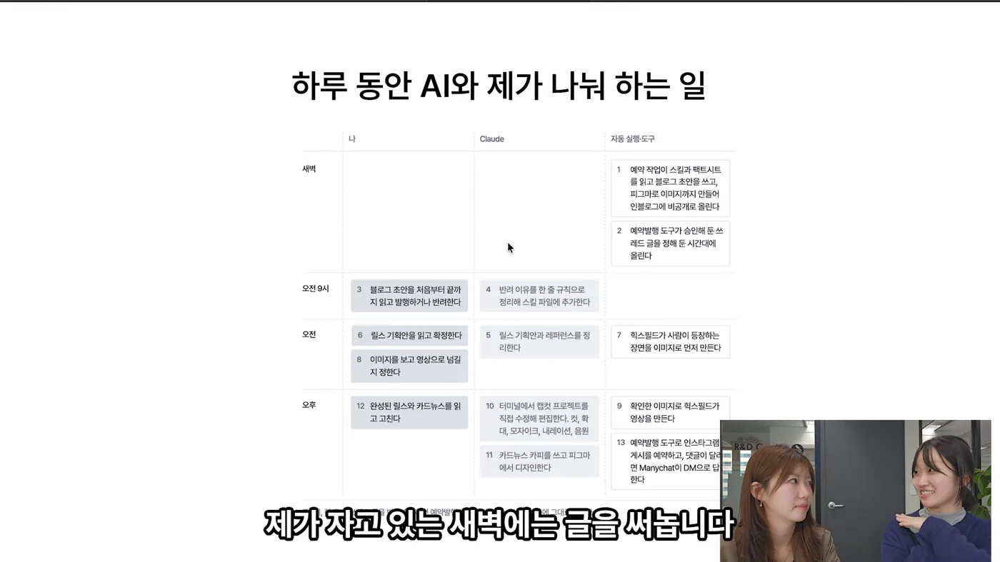
| 시간 | 나 | Claude | 자동 실행·도구 |
|---|---|---|---|
| 새벽 | — | — | 1 예약 작업이 스킬과 팩트시트를 읽고 블로그 초안을 쓰고, 피그마로 이미지까지 만들어 인블로그에 비공개로 올린다 · 2 예약발행 도구가 승인해 둔 쓰레드 글을 정해 둔 시간대에 올린다 |
| 오전 9시 | 3 블로그 초안을 처음부터 끝까지 읽고 발행하거나 반려한다 | 4 반려 이유를 한 줄 규칙으로 정리해 스킬 파일에 추가한다 | — |
| 오전 | 6 릴스 기획안을 읽고 확정한다 · 8 이미지를 보고 영상으로 넘길지 정한다 | 5 릴스 기획안과 레퍼런스를 정리한다 | 7 힉스필드가 사람이 등장하는 장면을 이미지로 먼저 만든다 |
| 오후 | 12 완성된 릴스와 카드뉴스를 읽고 고친다 | 10 터미널에서 캡컷 프로젝트를 직접 수정해 편집한다. 컷, 확대, 모자이크, 내레이션, 음원 · 11 카드뉴스 카피를 쓰고 피그마에서 디자인한다 | 9 확인한 이미지로 힉스필드가 영상을 만든다 · 13 예약발행 도구로 인스타그램 게시를 예약하고, 댓글이 달리면 Manychat이 DM으로 답한다 |
블로그 초안(새벽 예약 작업, 비공개 업로드), 스레드 예약 발행, 릴스 기획·이미지·영상·편집, 카드뉴스 카피·디자인, 댓글 DM 응답. [1]
아침에 초안 전체 읽고 발행/반려, 릴스 기획안·레퍼런스 확정, 이미지 → 영상 넘김 결정, 최종 수정. [1]
프롬프트 원문과 자막, 확인하지 않은 링크를 구분했습니다. 성과 수치를 재현하거나 스킬 파일 원본과 대조한 보고서는 아닙니다.
가려진 곳은 여러 프레임을 대조했습니다. 완전히 가려진 부분은 '영상에서 확인 불가'입니다. 사용자 제공 캡처와의 대조는 이 판에는 반영하지 못했습니다. [3]
고유명사 오인식이 있습니다. 예: '힉스필드'를 '릭스필드/픽스피드', 'MD 파일'을 '앤디 파일'. 본문은 화면 표기를 우선했습니다.
출연자가 배포한다고 한 스킬 파일(영상 설명란의 인스타그램 링크)은 열어 보지 않았습니다. 원본 전체 규칙과의 대조는 미완료입니다. [2]
Claude Code v2.1.317, Opus 5.5 등은 화면 표기 그대로이며 별도 확인하지 않았습니다. 20~30분 등 소요 시간도 출연자 발언입니다.